Steel Tide: to review
Version 205, 11-21 2:12 PM. Cleaned: only current items. Clips made before the new Petrel (M381) were removed; a fresh full outro clip from the live build is being made. Newest first. Total 25.3 MB.
Desert sand: the sun's reflection, like the ocean built, not live (round 3)
Updated 11-21 9:45 PM ET · captured from lane build (viewer export, Walking in sand row, camera turned to face the low sun; BEFORE = the glare switch off, AFTER = round 3 on, same 6.0 s mark)
What changed: Round 3: the glare toward the sun is twice as strong and reaches the near sand, and each sand ripple face turned to the sun now catches a bright gold line, with the faces turned away darker between them. Round 2 looked almost the same as before; this one does not. Nothing changes side-on, facing away, or with the sun behind you.
Where to look: Still: BEFORE on top, AFTER second, your target scene third, then a zoom of the near sand (BEFORE left, AFTER right). In the AFTER, see the ripple rows right of the pilot (lit lines) and the brighter sand ahead toward the sun. Video from 0.0 s: the pilot walks toward the sun; the lit ripple lines are right of the pilot from 5.0 s to the end.
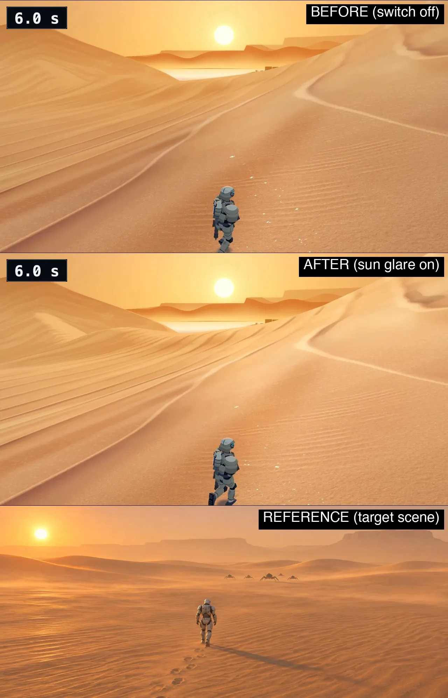
Click the image for full screen, click again for full size.
Pause the video at any moment to write a note for that second.
Mission start: no black screen before the flight built, not live
Updated 11-21 5:05 PM ET · captured from lane build 0246fd1d88 (viewer export, Launch sequence row, filmed from Deploy; the export timing check flagged a few repeated frames under load) + page captures of the real Mission Control start (BEFORE = Dock, AFTER = this build)
What changed: After Deploy the ship flying through the stars shows at once. The black 'Preparing the drop' screen (about 2 s) is gone: 2 frames now. The match HUD no longer shows over the flight.
Where to look: Still: top row BEFORE, bottom row AFTER, every 0.3 s from the pod drop; from 5.5 s the top row is black, the bottom row is the flight. Video from 0.0 s: the flight is the first frame after Deploy, the planet comes in at 3.2 s, the approach at 11 s.
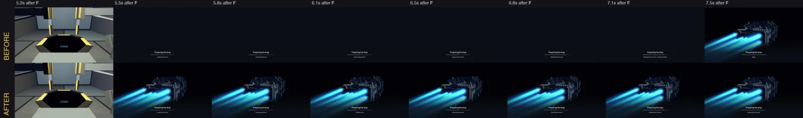
Click the image for full screen, click again for full size.
Pause the video at any moment to write a note for that second.
Hangar look: attach this to the ChatGPT prop prompts reference (the live hangar, before the teal floor dashes were removed)
Updated 11-21 2:30 PM ET · captured from live hangar, M229 era
What changed: Style anchor for the prop refine prompts: our clean low-poly look, slate-navy panels, yellow-black hazard trim, teal glow.
Where to look: Whole frame: flat clean surfaces, chunky shapes, no grime; that is what the props must match.
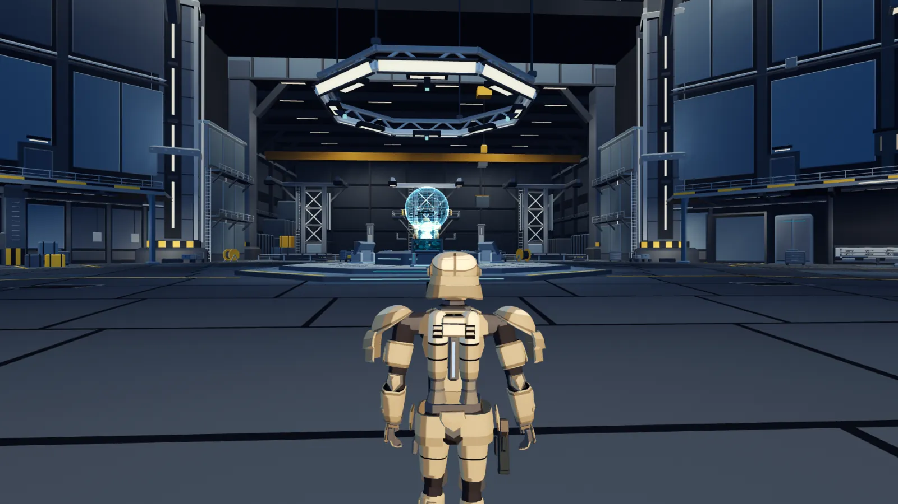
Click the image for full screen, click again for full size.
Petrel: tiltwing + airstair live M381. Clip REMOVED: it used the old slow fly-away outro and showed jet flames off the engines; both being fixed (ruling 2271)
Updated 11-21 2:30 PM ET · captured from lane build f3a298441a (tiltwing + airstair merged) vs Dock d7deeea3bf
What changed: Now in the real game cameras, with the new airstair merged in: wing and jet tilt as one unit, upright when landed and in the hangar, flat in flight; the stairs clear the jets at every tilt.
Where to look: Sheet: BEFORE left, AFTER right (island landing, hangar walk-out, fly-out). Clip (viewer export, first 10 s): landed 0-4 s, lift-off 5-7 s, flight away 8-10 s; the craft leaves the top of the frame briefly at 6-8 s.
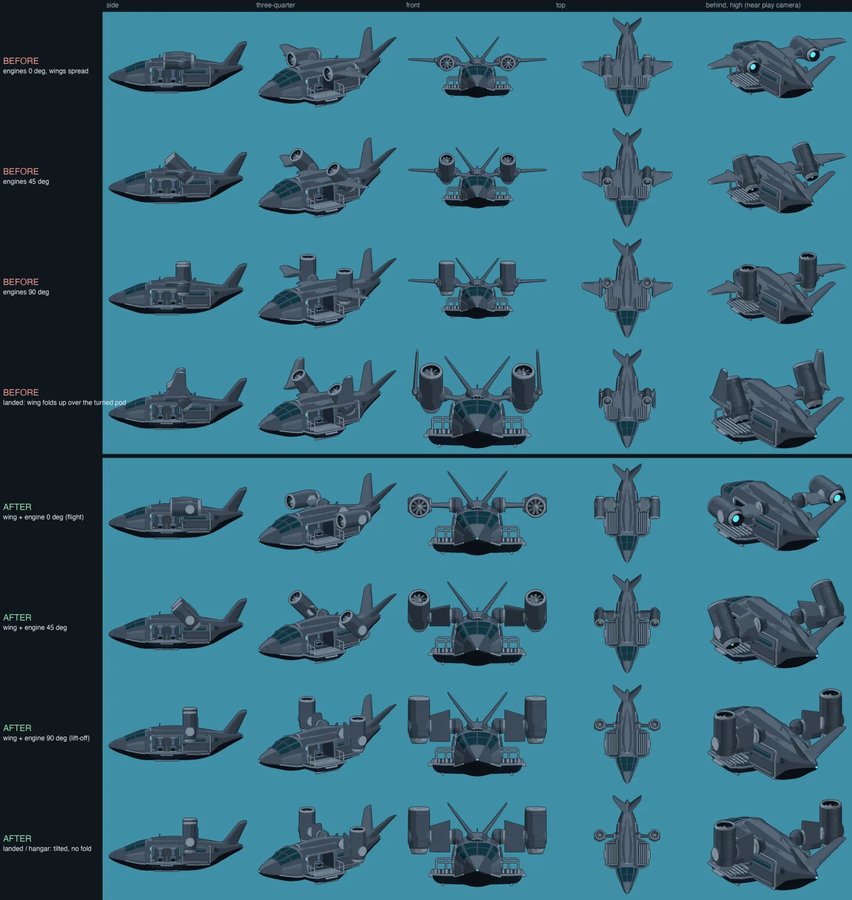
Click the image for full screen, click again for full size.

Click the image for full screen, click again for full size.
Old roll and floor dashes removed built, not live
Updated 11-21 1:50 PM ET · captured from lane build 85e740eb79
What changed: The Settings switch for the old ground roll is gone (the jet dash is the only ground dodge), and the two rows of teal dashes on the hangar floor are removed.
Where to look: Bottom half: the hangar floor in front of the pilot is clean where the teal dashes were. In Settings > Gameplay there is no Ground dodge row.
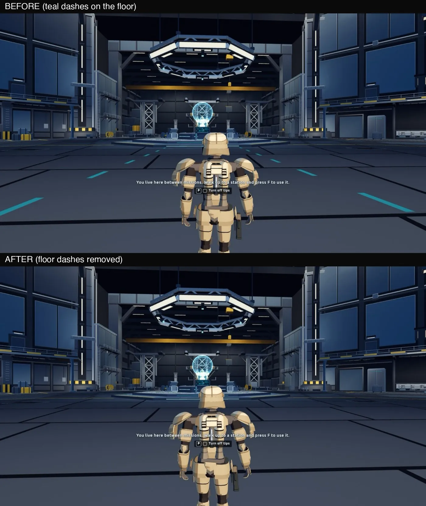
Click the image for full screen, click again for full size.
Desert sand round 20 built, not live
Updated 11-21 1:02 PM ET · captured from lane build GROUND-SAND-R18-1121
What changed: Sunlit sand near the pilot now has a fine grain speckle and a few bright sun glints (none in shade). Soft paler and deeper streaks along the wind break up the flat orange near the pilot. Sun-facing dune crests get a thin bright edge line. A few more broken ripple patches, and the ripples on the shaded side of a dune are finer and turned, so the two sides differ.
Where to look: Walking view and the bottom picture (a close-up of the sand under the pilot, each real pixel shown 3 times larger) for the grain and glints; play and wide views for the crest lines and streaks. The top picture is your target.

Click the image for full screen, click again for full size.
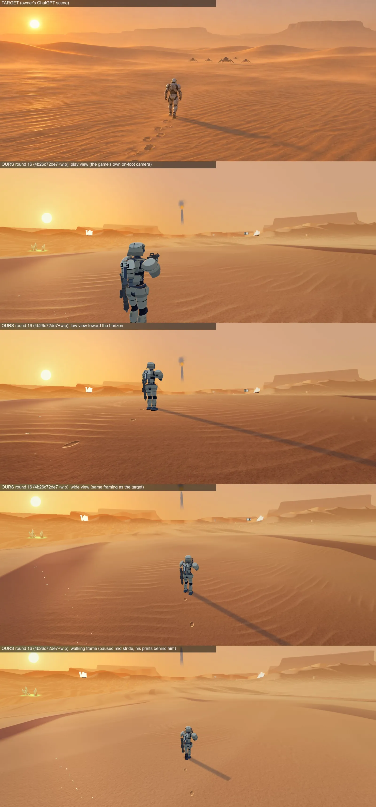
Click the image for full screen, click again for full size.
Station lift: the pilot goes dark with the ship live M376 (lighting). Clip REMOVED: it showed the old Petrel; re-shooting from the live build with the fixed arrival order (lift stops, door, stairs, walk)
Updated 11-21 1:02 PM ET · captured from lane build ELEVATOR-PILOT-LIGHT-1121 on Dock (BEFORE = Dock, same shot, same camera)
What changed: In the lift shaft the pilot was fully lit alone in the black; he now takes the same shaft darkening as the ship and the room, for you and co-op pilots.
Where to look: Video: around second 4 (the black shot); picture: top row is BEFORE with the lit pilot, bottom row is AFTER with the pilot dark; the later frames show the lit hangar is unchanged.

Click the image for full screen, click again for full size.
Petrel: folding airstairs live M381
Updated 11-21 1:02 PM ET · captured from lane build PETREL-AIRSTAIR-1121 r2 stills (real GPU, the island and the hangar)
What changed: The walk-on deck by each door is replaced by a folding airstair: steps and handrails, hinged at the door's foot. It folds up flush into the doorway once every pilot is seated, before take-off, and unfolds at the station once the lift stops, before the pilot walks out.
Where to look: Top-left is BEFORE (the live deck); the rest are AFTER: down, half folded, folded up, the close stowed fit, the flight look with the door shut, and the same in the hangar.

Click the image for full screen, click again for full size.
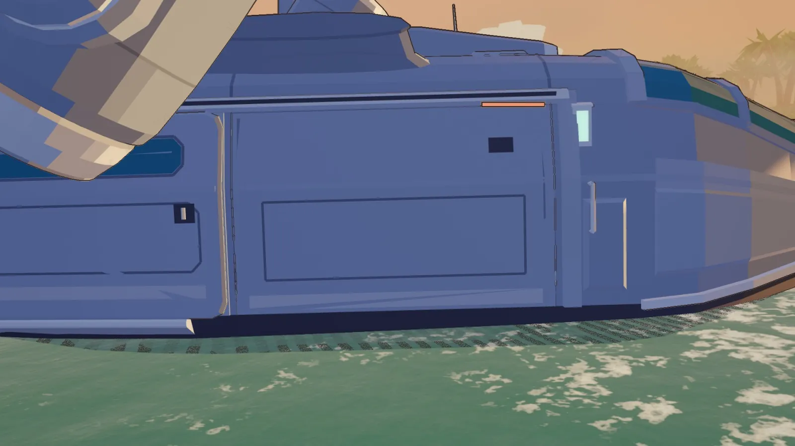
Click the image for full screen, click again for full size.
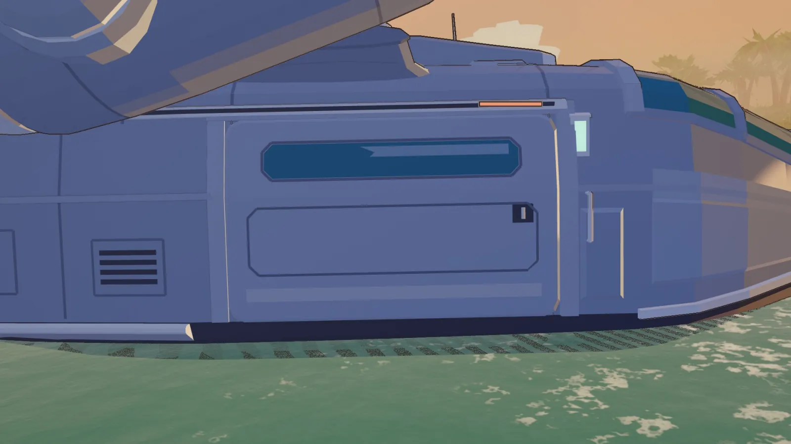
Click the image for full screen, click again for full size.

Click the image for full screen, click again for full size.
Unit ground shadows back on live M377 (not seen: switch Settings > Graphics "Unit ground shadows")
Updated 11-21 1:02 PM ET · captured from lane build a88e113835
What changed: Every unit casts its ground shadow again, following it every frame and leaning away from the map sun; about 0.2 ms GPU with 4,600 enemies.
Where to look: BEFORE top / AFTER bottom; the crowd is far off at this camera, so look at the shadows under the nearest units.

Click the image for full screen, click again for full size.
Extraction ending: control comes back as the hatch opens live M375. Clip predates the new Petrel (M381); fresh outro clip coming
Updated 11-21 1:02 PM ET · captured from lane build cabfd3ce7a (viewer export; failed the export timing check under load, a few repeated frames)
What changed: The forced walk now stops the moment the hatch starts opening; you have control from there. The clip is 4.6 s shorter.
Where to look: From about 48 s: the hatch starts opening and the scripted walk ends; the pilot stops short of the hatch at 54 s because nobody is holding forward in the export.
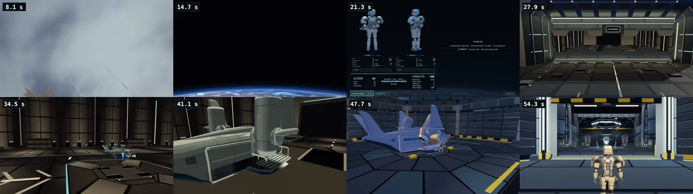
Click the image for full screen, click again for full size.
Pause the video at any moment to write a note for that second.
Mech hand cannons: pull uses the Singularity look (waits for your yes) built, not live: waits for your yes (Singularity look, ruling 2248)
Updated 11-21 1:02 PM ET · captured from lane build 317c3d92be (viewer export with Hand Cannons switched on in the tuning row; the take missed the clip-timing check by one late frame under machine load)
What changed: Shows the rejected pull look; the fix to the Singularity look is being built now.
Where to look: Watch the mech after each shot: the push back on the ground and the glide in the air.

Click the image for full screen, click again for full size.
Pause the video at any moment to write a note for that second.
Pilot walk: half the side-to-side sway (before / after) live M375
Updated 11-21 12:44 PM ET · captured from lane build 6c76392f99 (viewer export, pilot:gait; failed the export timing check under load, a few repeated frames)
What changed: The pilot's side-to-side hip sway while walking is cut to half (0.028 to 0.014). Nothing else changed.
Where to look: Left is BEFORE, right is AFTER, same row and camera behind the walking pilot; the hips and shoulders drift less from side to side.
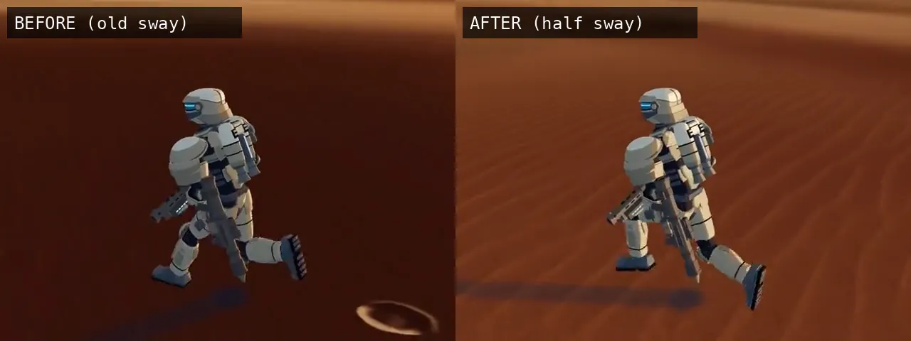
Click the image for full screen, click again for full size.
Pause the video at any moment to write a note for that second.
Dawn, a second time of day: for your yes or no (not in the game) in review
Updated 11-21 3:33 AM ET · captured from lane build 25e387dacb (dawn is off in the game)
What changed: Dawn was built long ago and never shown to you. Next to dusk: the sun is a little lower and paler, shadows are cooler and bluer, the haze is slightly thinner and pinker. The difference is subtle.
Where to look: Each sheet is the same moment, left dusk (live), right dawn. Fight sheet: same mech, same spot. Pilot sheet: the camera heading differs slightly between the two takes, which is not caused by dawn. The clip is the fight at dawn.
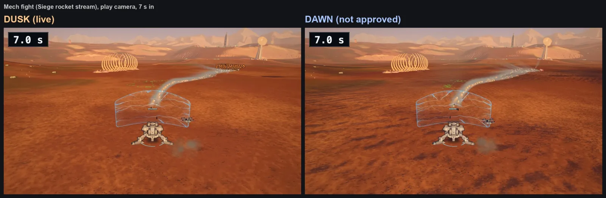
Click the image for full screen, click again for full size.
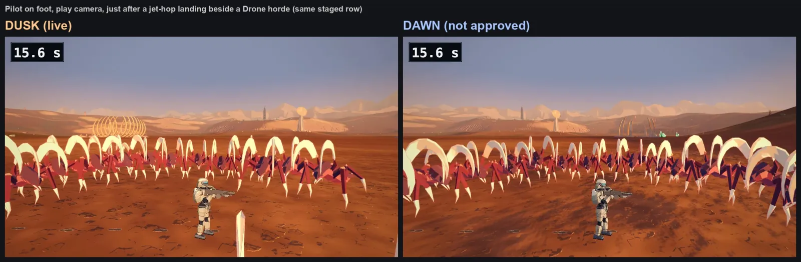
Click the image for full screen, click again for full size.
Pause the video at any moment to write a note for that second.
Weapon icons round 3: stylized from the real weapons, two directions needs your decision
Updated 11-20 10:55 PM ET · captured from design sheets (not in the game yet)
What changed: Round 3: each icon starts from the real weapon's side profile and is rebuilt as a few solid shapes with its identifying features exaggerated (round 2 was a traced outline). All 12 current weapons: 9 pilot guns and 3 mech guns. Two directions for the whole set.
Where to look: Picture 1: BEFORE (round 2) beside AFTER A and AFTER B for every weapon, then all twelve at real HUD size and blurred at the bottom. Picture 2: direction A, Stencil (upright, square edges). Picture 3: direction B, Raked (the same shapes leaning forward, rounded). In each tile the grey picture on the left is the real weapon; the small tiles on the right are the real HUD and loadout sizes.
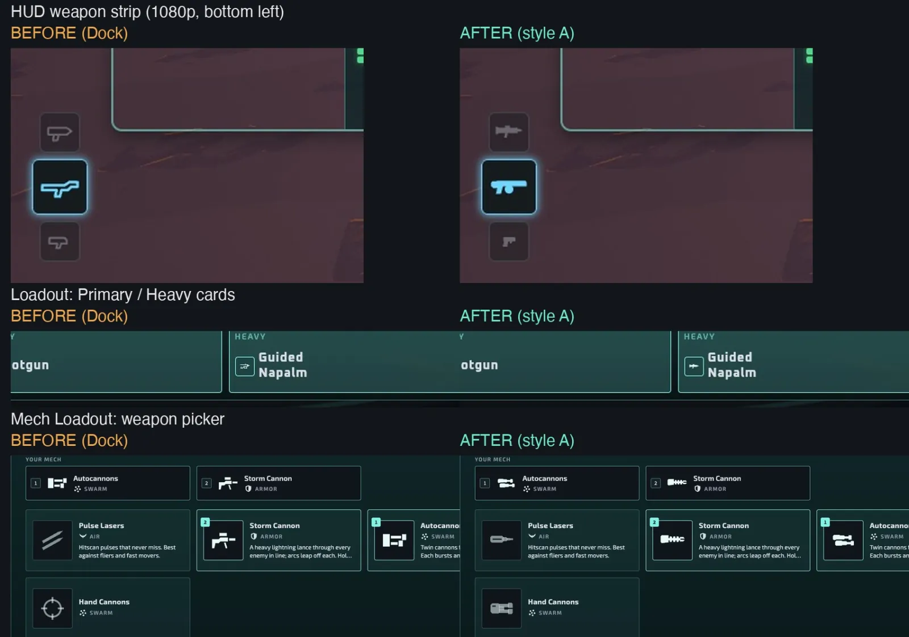
Click the image for full screen, click again for full size.
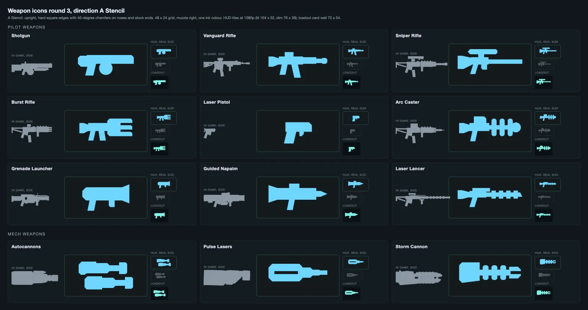
Click the image for full screen, click again for full size.
Click the image for full screen, click again for full size.
Desert sand: today against real sand (pick a direction) needs your decision
Updated 11-20 10:51 PM ET · captured from today = the live build; photos are real deserts from Wikimedia Commons
What changed: Nothing is built yet. This is the audit: today the desert is a flat dark red plane with a cracked-clay pattern, no dune shapes, no lit and shadowed sides, no ripples or grain, nothing moving, and almost no dust on a hit.
Where to look: Pictures 1 and 2 are the game today (on foot, then the mech view). Picture 3 is a real dune field (Erg Chebbi, Wikimedia Commons, CC BY-SA 4.0): look at the sharp crest with one lit side and one shadowed side. Picture 4 is real wind ripples (Bureau of Land Management, public domain). Direction A: stylized cel dunes like Journey, cheap. B: more physical sand like Dune: Awakening, medium cost. C: a storm-swept desert, expensive.

Click the image for full screen, click again for full size.

Click the image for full screen, click again for full size.
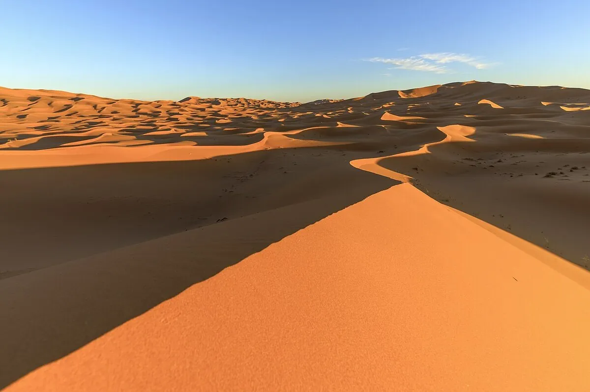
Click the image for full screen, click again for full size.
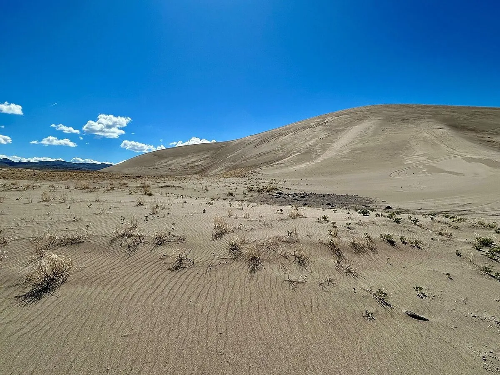
Click the image for full screen, click again for full size.
Your 8:00 PM report: which part of the boss looked wrong? needs your decision
Updated 11-20 10:51 PM ET · captured from your own report screenshot, build M322
What changed: Nothing changed. The job found no fault in the drawing code, so it needs you to point at the part.
Where to look: The boss is in the middle, seen from above with its jaws open. Was it (1) the two flat bright green patches in the mouth, (2) the ring of orange speckle around the jaws, or (3) the pale blocky smears on the water to its left?

Click the image for full screen, click again for full size.
New mech: first 3D model from your sheet not seen by anyone
Updated 11-19 11:21 PM ET · captured from Trellis seed mv_s503 (desktop)
What changed: Built from your front, back and side views together; the body shape now matches your sheet.
Where to look: Bottom-left render is the back: the hatch came out as a rounded hump with no hinge, so it gets built in house. The hands are fused mitts.

Click the image for full screen, click again for full size.

Click the image for full screen, click again for full size.
Tactician pilot: your pick, smudges cleaned (ready to wire) built, not live (cleanup done; hands passed the checks)
Updated 11-19 10:24 PM ET · captured from Blender render, clean round 3b
What changed: Smudges, belly specks and ragged colour edges cleaned; hands checked against your approved hands and passed with no change.
Where to look: Full views: ROUND 2 left, AFTER right. Tiny flecks remain only in extreme close-ups (knee ring, back spine bar).

Click the image for full screen, click again for full size.

Click the image for full screen, click again for full size.
Vanguard pilot: your pick, six fingers fixed (ready to wire) built, not live (hands approved, ruling 2040)
Updated 11-19 10:24 PM ET · captured from Blender render, hands round 2
What changed: Extra finger folded in and the palm narrowed: four fingers and a thumb on each hand, matched.
Where to look: Full body BEFORE left, AFTER right.
You found six fingers on one hand. It gets the same hand fix as the Engineer before it goes further.

Click the image for full screen, click again for full size.
NEEDS YOUR PICK: the drop cannon's size on the Cradle (three sizes), with its back hidden and navy colour live M226; the Cradle is on by default since M233 (cannon pick still open)
Updated 11-18 7:43 PM ET · captured from lane build 7bb227aa5d
What changed: The cannon is now the ship's navy instead of bright white, its back is hidden in a gun bay like on the old ship, and the old ship no longer flashes at the start. Same cannon, same sequence.
Where to look: First three images: the cannon unfolded at three sizes, today's 1.4 times, then 2.5 times, then 3.5 times. In these previews the cannon stays the same size on screen and the SHIP is drawn smaller, so compare how big the cannon is against the hull above it. Then the full sheet: old ship on the left, Cradle on the right, for arrival, push, unfold, scope and launch.
Your pick: 1.4 is what ships today and everything clears. At 2.5 and 3.5 the cannon looks right for a ship this size, but its unfold swing hits the hull, so choosing either means one more round to make room for the swing. Weak points: the cannon's cyan coils and pale bands still stand out against the navy, and it does not take the hull's shadow.

Click the image for full screen, click again for full size.

Click the image for full screen, click again for full size.

Click the image for full screen, click again for full size.

Click the image for full screen, click again for full size.
NEEDS YOUR CALL: island Horde, camera zooms in when you are on foot built, not live: waiting for your call on how close
Updated 11-17 1:30 PM ET · captured from lane build, island Horde, 1920x1080; top half = the live build, bottom half = the change, same script
What changed: On foot the camera now eases in from 110 to 40 (the mech view is unchanged). The pilot goes from about 7 pixels tall to about 20. That is still small: it stops there so you can see enemies 2 seconds before they reach you.
Where to look: Clip: top is before, bottom is after. At about 4 seconds the pilot leaves the mech and the bottom view eases in; at the end he re-enters and it eases back out. Still: the same on-foot moment, before on the left, after on the right; the pilot is the small figure right of the mech.

Click the image for full screen, click again for full size.
Pause the video at any moment to write a note for that second.